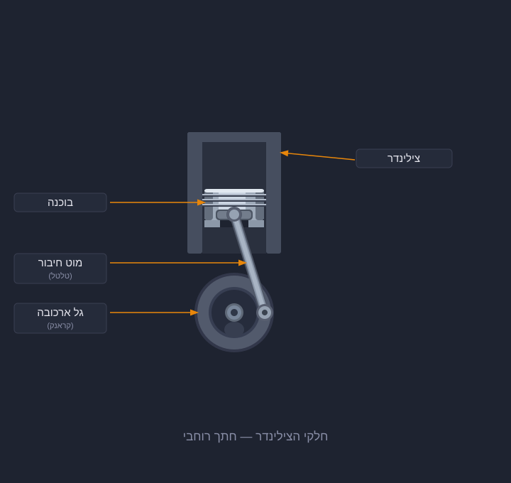
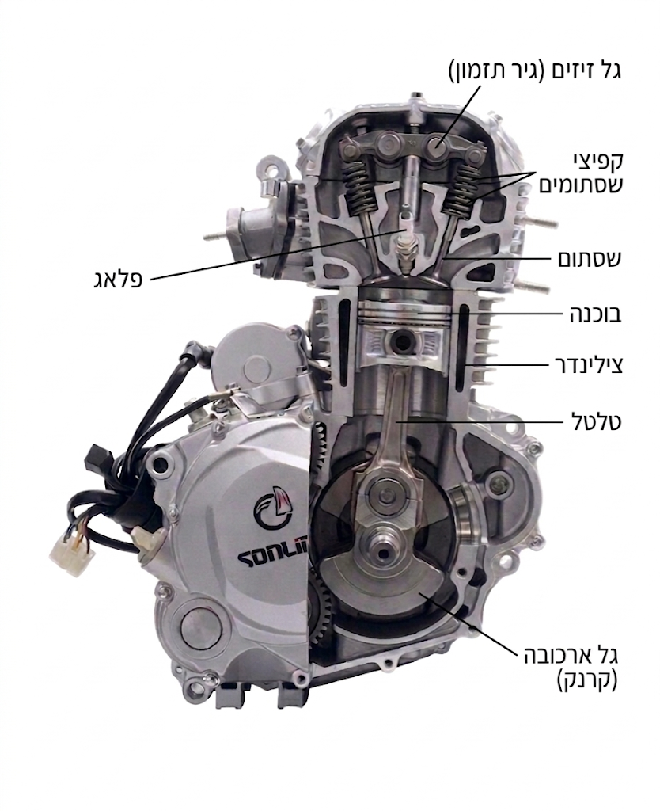
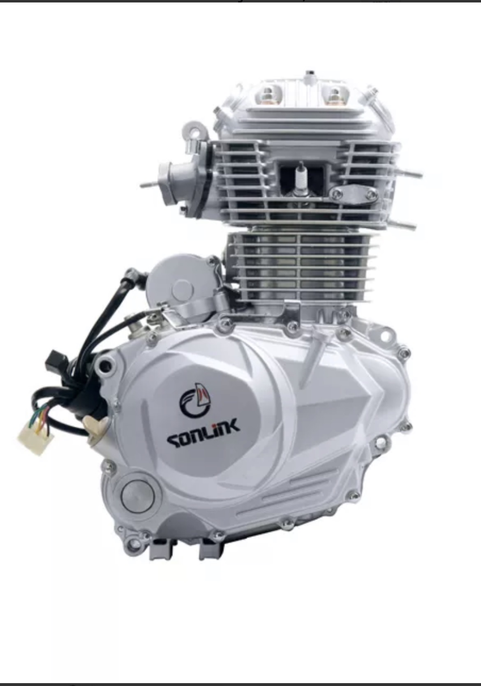

אז מה בעצם קורה בתוך מנוע כשהוא עובד, ואיך דלק הופך לתנועה?
בתוך כל מנוע בעירה יש חלק בצורת גליל מתכת שנקרא בוכנה, הבוכנה נעה מעלה ומטה בתוך הצילינדר. הצילנדר הוא בעצם תא סגור בצורת צינור ובו כמה פתחים שתכף נסביר את תכליתם. (הקוטר של גליל הבוכנה מתאים בדיוק לקוטר של הצילינדר, וכך הבוכנה יכולה לזוז מעלה ומטה בתוך הצילינדר בלי רעידות ובעיות, בגלל שהצילינדר הוא בעצם תא סגור, כאשר הבוכנה יורדת למטה חלל הצילינדר גדל ונוצר בתוכו ואקום. וכאשר הבוכנה עולה חלל הצילינדר מצטמצם והאוויר שבתוכו נדחס. בחלק העליון של הצילינדר יש שלושה פתחים, פתח אחד שבו יושב הפלאג (המצת) כך שהוא חוסם את אותו הפתח וקצהו נמצא בתוך הצילינדר. ושני פתחים משמסוגלים להיפתח ולהיסגר תוך כדי עבודת המנוע, והם נקראים השסתומים.
אמרנו שכאשר הבוכנה יורדת נוצר ואקום בצילינדר, במקביל לירידת הבוכנה נפתח אחד מהשסתומים שמחובר למערכת הדלק, ובגלל הואקום שנוצר עם ירידת הבוכנה דלק ואוויר נמשכים פנימה לתוך הצילינדר. אחרי שהבוכנה מגיעה לנקודה הכי נמוכה שלה היא מתחילה לעלות חזרה, כשהיא עולה שני השסתומים סגורים ותערובת הדלק והאוויר שנכנסה קודם לצילינדר נדחסת. כשהבוכנה מגיע לנקודה הכי גבוהה שלה בצילינדר הפלאג נותן ניצוץ שמדליק את הדלק שבתוך חלל הצילינדר. שריפת הדלק יוצרת פיצוץ שבעקבותיו הבוכנה נדחפת בכוח למטה ומגיעה שוב לנקודה הכי נמוכה שלה. כשהבוכנה מגיעה לתחתית היא מתחילה לעלות חזרה, בשלב הזה נפתח השסתום השני (שסתום הפליטה) שמחובר לאגזוז, ודרכו הגזים והעשן שנוצרו בעקבות השריפה נפלטים החוצה.
אבל מה גורם לבוכנה לעלות ולרדת בתוך הצילינדר?

כמו שרואים כאן למעלה הבוכנה מחוברת אל מוט ששמו הטלטל והמוט הזה מחובר בחלקו התחתון לגלגל שנקרא הקראנק (גל הארכובה בעברית).
כאשר הבוכנה יורדת ועולה המוט מסובב את הקראנק, וכך בעצם כאשר הבוכנה נדחפת בחוזקה מטה היא גם עולה בחוזקה מעלה כי גל הארכובה ממיר את הדחיפה כלפי מטה לדחיפה כלפי מעלה.
כמו שאמרנו, הצילינדר הוא חלל סגור, ההדמיות האלה נותנות מבט פנימי לתוכו אבל במציאות כשנסתכל על מנוע שלם הוא יראה לנו כבלוק מתכת סגור.
כך יראה מנוע של אופנוע מבחוץ ומבפנים:


כשהמנוע עובד הבוכנה עולה ויורדת בתוך הצילינדר אלפי פעמים בדקה, והיא עושה זאת במחזורים של ארבע פעולות:
ירידה - עלייה - ירידה - עלייה.
המחזור הזה של ארבע תנועות נקרא ארבע הפעימות: